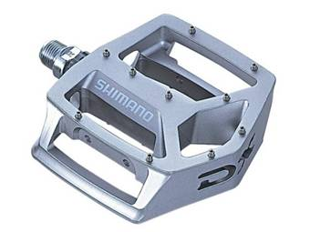
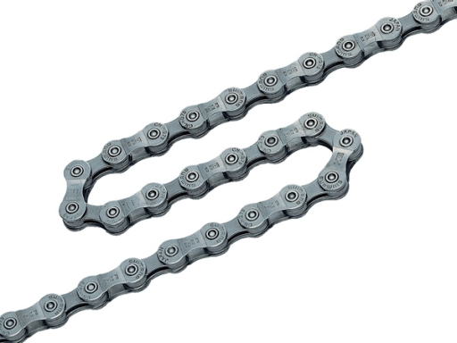

توجه
این کتاب در حال نوشته شدن است. فصل ها کاملتر خواهد شد. شما در حال دیدن آن هستید چون نیازی نیست چیزی برای دیده شدن منتظر کامل
شدن بماند. چیزها همیشه در حال تکمیل شدن هستند، در این مورد هم همینطور است با این اختلاف که عملا تازه شروع به ساخته شدن
کرده؛ ولی دلیلی ندارد همین حالا هم به درد کسی نخورد. انتظار می رود در طول یک ماه آینده، همه فصل های اصلی نوشته شوند.
توجه
این کتاب در حال نوشته شدن است. فصل ها کاملتر خواهد شد. شما در حال دیدن آن هستید چون نیازی نیست چیزی برای دیده شدن منتظر کامل
شدن بماند. چیزها همیشه در حال تکمیل شدن هستند، در این مورد هم همینطور است با این اختلاف که عملا تازه شروع به ساخته شدن
کرده؛ ولی دلیلی ندارد همین حالا هم به درد کسی نخورد. انتظار می رود در طول یک ماه آینده، همه فصل های اصلی نوشته شوند.
دوچرخه ابزاری فوق العاده است. یکی از معدود ابزارهای مدرن که میتوان کل دل و رودهاش را بشناسید، تعمیر کنید، تعویض کنید یا به روز رسانی کنید. فهرست زیر تقریبا همه اجزای یک دوچرخه استاندارد را به شما نشان میدهد. کاملا این امکان وجود دارد که مثلا کمک فنر را باز کنید و به جایش کمک فنری بزرگتر ببندید یا اگر فرمانتان زیادی عریض است، آن را با فرمانی کوتاهتر عوض کنید. حتی اگر در ابتدای کار دوچرخهتان را با لوازمی ارزانتر خریدهاید ولی از بدنه آن راضی هستید، میتوانید فقط اجزایی مثل دندهها را با دندههایی رده بالاتر عوض کنید و دوچرخه سرحالتری داشته باشید.


۱- بدنه یا تنه

بدنه معمولا از چند لوله اصلی تشکیل میشود و در دوچرخههای جاده و کوهستان شکلی مثلثی شکل دارد. جنس این بدنه میتواند از آهن، آلومینیوم یا کربن باشد. جنس آلومینیوم برای اکثر ما بهترین انتخاب است. بعضی برندها با تغییرات جزیی در شکل بدنه، امضاهای خاص خود را ایجاد کردهاند. مثلا کمپانی جی تی، با ساختن یک مثلث کوچک در بالای مثلث اصلی، دوچرخههایش را کاملا قابل تشخیص کرده:

۲- دوشاخ

دوشاخ قطعه ای است که به جلوی بدنه وصل شده، چرخ جلو را نگه می دارد. در صورتی که دوشاخ بدون فنر باشد به آن دوشاخ خشک میگویند و اگر کمک فنر داشته باشد، ممکن است بادی باشند یا روغنی. وضعیت کمک دوشاخهای فنر دار را معمولا میتوان با یک کنترل روی خود کمک فنر یا روی دسته باز و بسته کرد. نمونههایی که از روی بسته تنظیم میشوند و نمونههایی که کمک فنر طولانیتری هسند، معمولا بهتر حساب میشوند اما سوال اصلی این است که آیا شما به آنها احتیاج دارید یا نه. بخصوص که بودن کمک فنر باعث جذب بخشی از انرژی رکاب زدن شما میشود و دقیقا به همین دلیل است که دوچرخههای جاده، کمک فنر ندارند و از دو شاخهای خشک استفاده میکنند.
۳- فرمان

فرمانها ممکن است شکلهای مختلفی داشته باشند. گاهی در یک خط مستقیم، گاهی کمی منحنی و گاهی فرمانهای کورسی کلاسیک که به آنها دراپ گفته میشود. عرض بزرگتر کنترل بهتری روی دوچرخه به شما میدهد اما در مقابل امکان رد شدن از مکانهای باریکتر را از شما میگیرد. برای بعضی ها مهم است که فرمان اجازه دو سه مدل در دست گرفتن را به سوار بدهد تا در مسافتهای طولانی بتوان وضعیت دست را تغییر داد و جلوی خستگی را گرفت. یک نمونه مشهور به پروانهای را در زیر میبینید:

۴- کرپی فرمان

کرپی (که تقریبا شبیه corpi تلفظ میشود) قطعهای است که فرمان شما را به بدنه دوچرخه متصل میکند. کورپی بلندتر یا کوتاهتر اجازه میدهد که زاویه نشستن را کمی تنظیم کنید. معمولا من و شما نیازی به تعویض کرپی نداریم هرچند که در برخی انواع کورپی، با یک پیچ میشود زاویه آن را تغییر داد و فرمان را کمی بالاتر / نزدیکتر آورد.
۵- زین یا صندلی

بعضیها زینهای ورزشی نازک را دوست دارند و بعضیها زینهای بزرگتر و راحت را. مستقل از تنظیم ارتفاع، بسیاری زینها قابلیت تنظیمات ریزتری مثل تنظیم سطح افقی هم دارند.
۶- لوله زین

لوله زین از بالا به زین وصل میشود و پایین آن در بدنه فرو میرود. با این روش میتوان زین را در ارتفاع مناسب تنظیم کرد. این تنظیم را حین خرید از فروشنده بخواهید.
۷- لاستیک یا تایر

تایرها با چند مشخصه مثل اندازه و میزان عاج و عرض شناخته میشوند. تایرهای صافتر مربوط به جاده بوده و تایرهای عریضتر و پر عاج مربوط به کوهستان هستند. گاهی میتوان دوچرخه هایی با تایرهای مقاومتر در برابر پنچری خرید و گاهی تایرهای تیوپ لس. ولی در خرید اول خیلی هم سختگیر نباشید.
۸- طوقه

طوقه برای ما چیز پیچیده ای نیست چون احتمالا آخرین چیزی است که به آن توجه میکنیم. در عبارت فنیتر طوقه و پرههای دوچرخه دو چیز مجزا هستند ولی برای من و شمای غیرحرفهای این مساله خیلی هم حساس نیست. به همین خاطر معمولا دوچرخههای آماده، طوقههای فوق العادهای ندارند و بعد از حرفهای شدن، خیلیها به عنوان اولین چیز به دنبال تعویض طوقهها و بخصوص خرید طوقههایی سبکتر میروند.
۹- پنجه رکاب

پنجه رکاب ممکن است در بسته اصلی دوچرخه شما نباشد! دلیل این امر تنوع بسیار زیاد آن است. پنجه رکابهای حرفهای بخشی دارند که به کفش حرفه ای قفل میشود تا سوارکار حین بالا کشیدن پا هم بتواند به رکاب فشار وارد کند. این دوچرخه ها برای شهر چندان مناسب نیستند چرا که جدا شدن از دوچرخه در مواقع خطر یا نیاز به ایست را سختتر میکنند. حداقل تا وقتی به خوبی با آنها آشنا نیستید. در صورتی که دوچرخه خودتان را اسمبل میکنید، دقت کنید که رکاب چپ و راست تفاوت دارند و روی آنها نوشته شده که مربوط به کدام سمت هستند.
۱۰- طبق قامه

طبق قامه، صفحهای است که رکابها در نهایت به آن متصل میشوند. تعداد چرخ دنده روی آن، دندههای جلوی شما را مشخص میکند.
۱۱- شانژمان (دستگاه تعویض دنده عقب)

این ابزار بسیار جالب، در اصل یک فنر دقیق است که میتواند فشاری عرضی به زنجیر وارد کند و زنجیر را روی چرخ دنده مورد نظر بیاندازد.
۱۲- طبق عوض کن (دستگاه تعویض دنده جلو)

بازهم یک ابزار دارای فنر برای تعویض دندههای جلو. در عمل با فشار عرضی به زنجیر، آن را روی یکی از چرخدندههای تعبیه شده روی طبق قامه میاندازد.
۱۳- دسته دنده

اهرمی است که با فشردن آن، شانژرمان یا طبق عوض کن حرکت میکند و زنجیر را روی چرخدندههای مختلف حرکت میدهد. انواع دستهدنده وجود دارد. گاهی در مدلهای سادهتر با چرخاندن یک چرخ روی دسته، دنده عوض میکنید و گاهی با کشیدن اهرمها، مستقیما شانژرمان را هل میدهید. اگر دوچرخه ای می خرید از فروشنده بخواهید به شما نشان دهد که کدام دنده در کدام جهت با کدام دسته دنده حرکت میکند. معمولا برای تنظیم دنده یک اهرم برای پر کردن و یک اهرم برای خالی کردن دنده استفاده میشود پس دوچرخهای که هم در جلو و هم در عقب دنده دارد، چهار دسته دنده لازم دارد.
۱۴- دسته ترمز

اهرمی است که باعث میشود ترمزهای روی چرخ عمل کنند. انرژی وارد شده به دسته دنده ممکن است با یک سیم یا با یک سیستم هیدرولیک به مکانیزم اصلی ترمز منتقل شوند. قسمت اصلی ترمز یا لقمه ای است که دو قطعه را روی طوقه فشار میدهد یا دیسکی که دو لنت را روی یک دیسک که وسط چرخ قرار گرفته میفشارد. در دوچرخههای کورسی ممکن است دسته ترمز و دسته دنده در یک مکانیزم تعبیه شده باشند.
۱۵- ترمز (دیسکی و لقمهای)

ترمزها وظیفه نگه داشتن دوچرخه را بر عهده دارند. اینکار از طریق ایجاد اصطکاک انجام میشود. در ترمزهای دیسکی این اصطکاک بین یک صفحه فلزی که در وسط چرخ قرار گرفته و دو لنت اتفاق میافتد و در ترمزهای لقمهای، بین دو لقمه و طوقه دوچرخه. ترمزهای دیسکی معمولا کارایی بهتری دارند ولی تنظیم و تعویض آنها پر دردسرتر است و هنوز هم خیلیها ترمزهای لقمهای را به دلیل سادگی و کارایی مناسب ترجیح میدهند.
۱۶- خودرو

خودرو به چرخ دندههایی میگویند که به چرخ عقب بسته میشوند و باعث میشوند زنجیر بتواند با حرکت روی آنها، سرعت و قدرت متفاوتی به چرخ وارد کند. در واقع اگر خودروی شما ۹ چرخ دنده داشته باشد، دوچرخه شما ۹ دنده در عقب خواهد داشت.
۱۷- زنجیر

زنجیر که بین چرخ دنده طبق قامه و خودرو کشیده شده است، انرژی رکاب زدن و در نتیجه چرخیدن طبق قامه شما را به چرخ عقب منتقل میکند. شاید برایتان جالب باشد که یک زنجیر سرحال، ممکن است شما را ده درصد از یک زنجیر کثیف و مشکل دار سریعتر کند! در فصل نگهداری از دوچرخه به این مساله خواهیم پرداخت.